Xiaoxia Huang黄 晓 夏
舞蹈编导 · 舞蹈教师Choreographer · Dance Educator
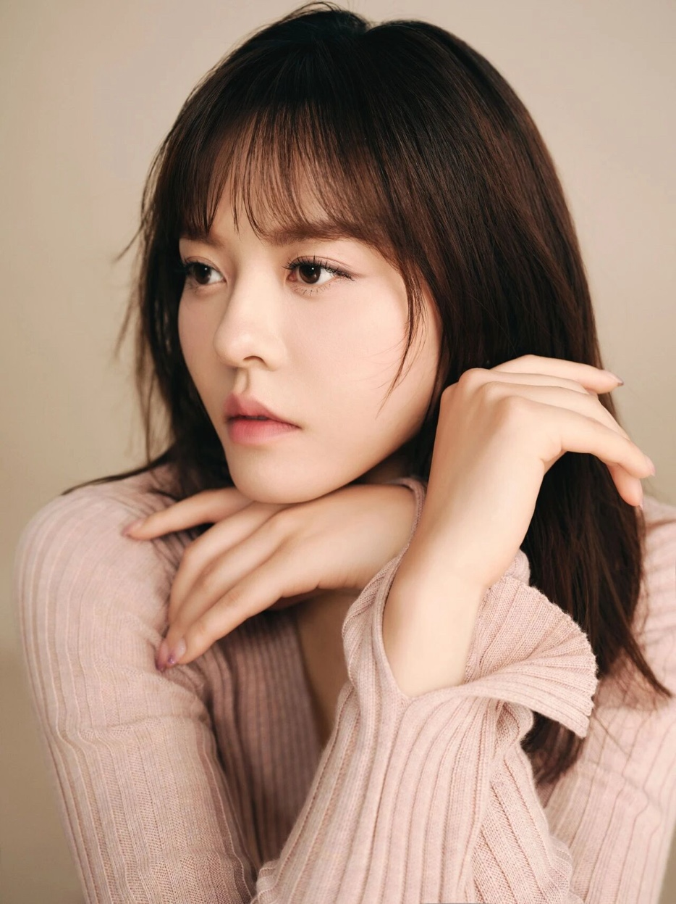
黄晓夏，舞蹈编导，舞蹈教师，艺术总监。曾任清华大学艺术教育中心舞蹈教师（2013-2025），创立清华大学学生无界舞蹈剧场（THU-BDT）——清华首个由非舞蹈专业学生组成的舞蹈剧场团体。现于纽约大学攻读舞蹈教育硕士。
十余年间，她开设了五门面向全校本科生和研究生的舞蹈实践课程，带领跨学科学生完成五部原创现代舞作品的创作与舞台呈现，作品多次登上国家级文化节庆、新年晚会和博物馆沉浸式演出平台。
Xiaoxia Huang is a dance educator, choreographer, and artistic director based in Beijing and New York. She served as dance instructor at Tsinghua University's Center for Arts Education (2013–2025), where she founded Boundless Theater — the university's first dance-theater collective composed entirely of non-dance majors. She is currently an M.A. candidate in Dance Education at New York University.
Over a decade, she developed five university-wide practice-based dance courses and led interdisciplinary cohorts in creating five original modern dance works, presented at major cultural festivals, national galas, and museum-based immersive platforms.
"I'm not interested in how people move,
I'm interested in what makes them move."
那些被我们称作人生的悲欢离合，
不过是大气层在亿万年尺度上一次微小的呼吸。
自然从不说话，它只用
风的流动、雨的颗粒、光的颜色
书写自己的故事。
于是我决定——
让舞者代替云去"沉默地诉说"。
What we call the joys and sorrows of life
are merely a single tiny breath
of the atmosphere across billions of years.
Nature never speaks. It writes its own story
with the flow of wind, the grain of rain,
and the color of light.
So I decided —
to let the dancers "speak in silence"
on behalf of the clouds.
舞蹈对你意味着什么？What does dance mean to you?
在人形山川里，沉默的血翻涌成河——你要让它是真的。彼此被一种纯粹的热爱推动着，是遥不可及，又是冥冥注定，是历经千帆后的确信。用它的眼睛和身躯，去突围、去逐光、去野望——去写诗、去高歌、去跳舞。
In the landscape of the human form, silent blood surges into rivers — and you must make it real. We are driven by a pure, shared love — something once unreachable, yet always destined, a conviction forged after countless storms. With our eyes and bodies, we break through, chase the light, dream wildly — we write poetry, we sing, we dance.
你如何看待艺术与生命的关系？How do you see the relationship between art and life?
艺术从未高悬，它始终流淌在每个人的身体里。漫游者不再孤独——当多元的身体在空间中交织，当陌生的目光因艺术交汇，便成了共有的精神原乡。舞者俯身时，山脉在脊背上隆起；扬手间，鱼鳍在指尖生长。万象在此和合，无界无疆——艺术终将超越形式，成为天地呼吸的节律。
Art was never meant to hang above us — it has always flowed within every body. The wanderer is no longer alone: when diverse bodies interweave in space, when unfamiliar gazes converge through art, they become a shared spiritual homeland. When a dancer bends, mountains rise along the spine; in the lift of a hand, fins grow at the fingertips. All things find harmony here, boundless and infinite — art transcends form to become the breathing rhythm of heaven and earth.
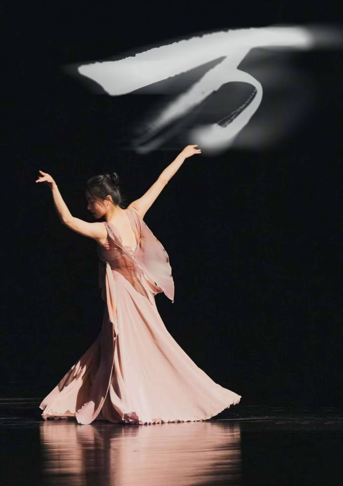
Echoes of Resonance · 2025
一部用身体"素描"天空的舞蹈。将人生境遇与云海万象交织，通过舞者的肢体哲学，探寻人生境界的心灵对话。是积雨云翻滚时的怒吼，也是雨后晴空的微笑。这不仅仅是在跳云的故事，更是在理解自己，理解人与人，人与自然的关系。
A contemporary dance work that uses the imagery of clouds to examine human existence, emotional cycles, and connection. Through ensemble movement, shifting density, and continuous physical flow, dancers form a shared kinetic landscape where memory, impermanence, and resonance emerge through collective motion.
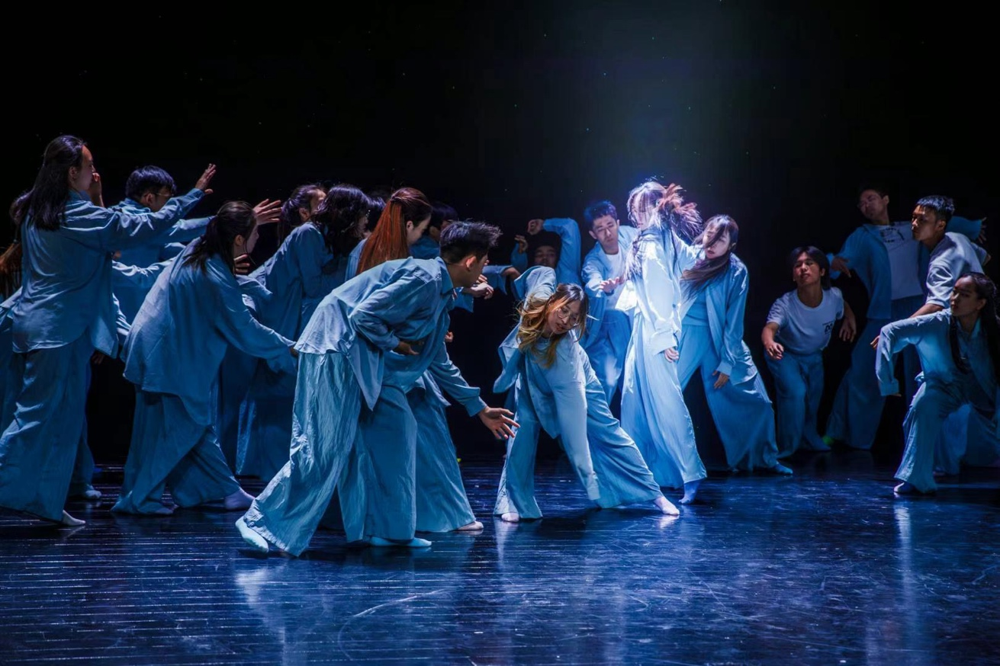
Serendipity · 2025
偶然相遇由无形的联结引导。当受过训练的身体与日常的身体相遇，艺术消融于生活之中，揭示出灵感不是等来的，而是在我们相遇的瞬间诞生的。清华大学艺术博物馆沉浸式演出项目"即使漫游"开场作品。
Where chance encounters are guided by invisible connections. Through the meeting of trained and everyday bodies, art dissolves into life, revealing that inspiration is not awaited, but born in the moment we meet. Opening work of the 2025 immersive performance project at Tsinghua University Art Museum.
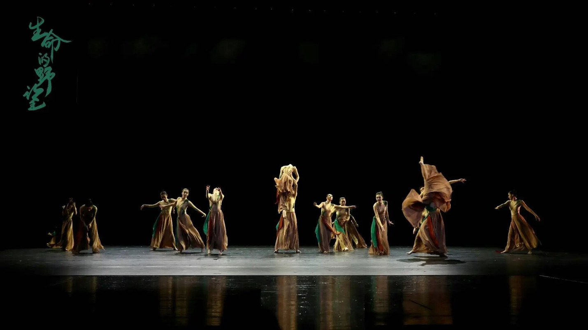
The Untamed Vitality of Life · 2023
心脏跳动迸发大地血脉，年轮流转锈刻生命辙痕。骤雨狂风，野火蔓延，百草恣意狂舞。春风拂过，万物拔节，翻涌出生命交响。舞蹈以道劲野草象征熠熠青年，与新时代同向同行，在中国大地深情野望，书写民族复兴篇章。
An original modern dance inspired by the cyclical vitality of nature. Grounded movement, collective rhythm, and sustained physical intensity articulate endurance and renewal, revealing a resilient life force that persists and re-emerges over time. All performers were students across multiple academic disciplines at Tsinghua University.
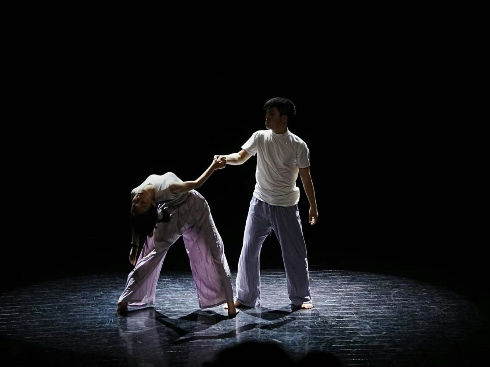
City of Heartbeat · 2023
清华大学学生艺术团话剧队原创音乐剧，担任舞蹈编导。作品获北京大学生戏剧节优秀指导教师奖，并在第八届中国校园戏剧节获银奖及优秀创作奖（多幕剧类）。
Original musical by Tsinghua University Student Art Ensemble Drama Troupe. Served as dance choreographer. Received Outstanding Instructor Award at Beijing College Students Drama Festival, Silver Award and Outstanding Creation Award at the 8th China Campus Theater Festival (Multi-Act Drama).
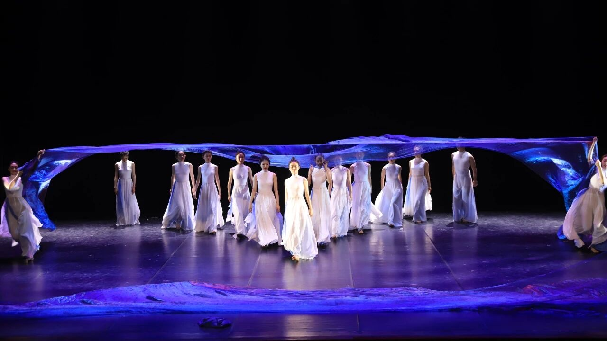
Chasing the Light Across the Vast Sea · 2021
海纳百川，不问出处；此起彼伏，承载万物；百转千回，逆风远逐。当水流终汇进大海，平等的灵魂触碰彼岸。以纱和人的互动，描绘出一幅万物在海洋翻腾中不断积蓄能量，周而复始，生生不息的画卷。
Inspired by poetic and philosophical reflections on the sea, this work examines the dynamic relationship between human will and vast natural forces. The choreography moves between struggle and calm as dancers embody the sea as both challenge and refuge.
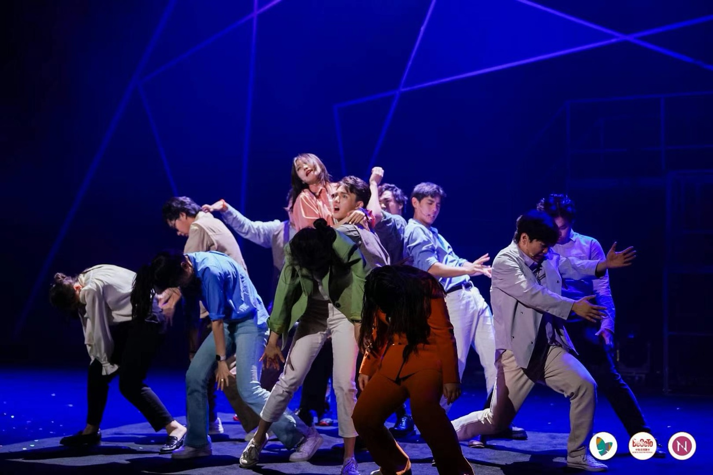
突破 · 2017Breakthrough · 2017
即便四肢被现实绑缚，心也扣上了枷锁，可是他们仍骄傲地昂着头。你听，不羁的灵魂在沸腾。你看，自由的生命在狂舞。舞蹈由一卷平凡的彩色卷纸展开，它的一次次蜕变，和舞台丰富的空间运用，将演员从迷茫、到挣扎再到突破的主题层层深入地表现出来。
Exploring constraint, resistance, and liberation, this ensemble-based work integrates movement, spatial design, and material transformation. A roll of colored paper functions as a visual and kinetic element guiding the progression from disorientation toward release.
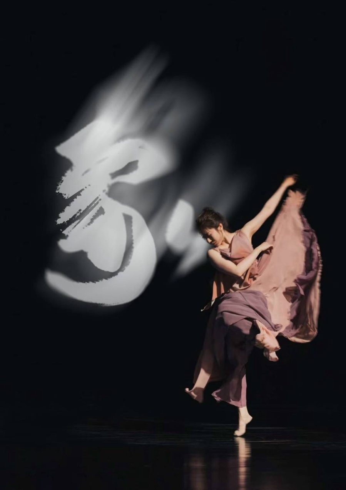
万象和合 · 舞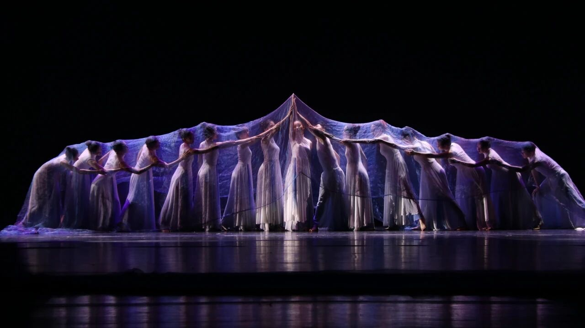
浩海逐光 · 山峦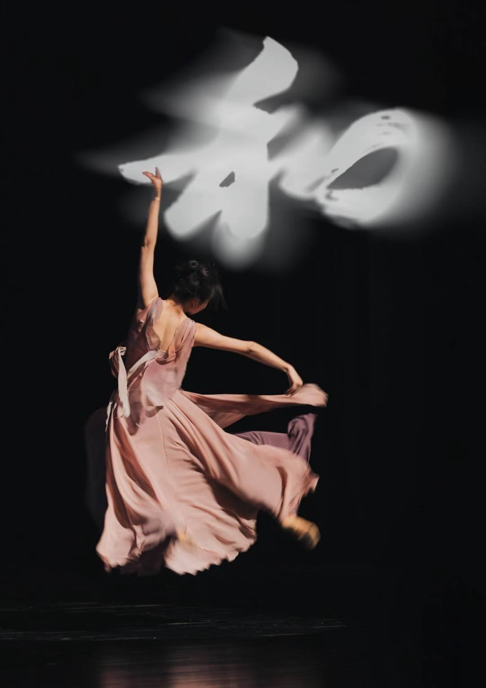
万象和合 · 和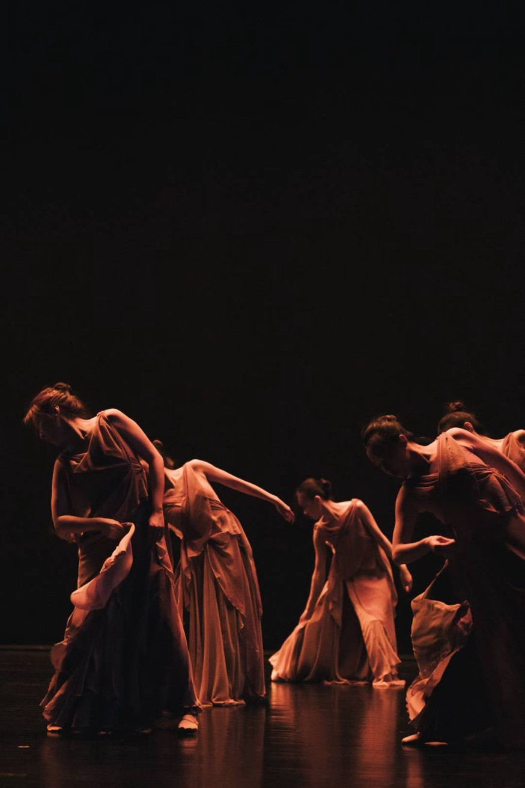
暮光 · 流动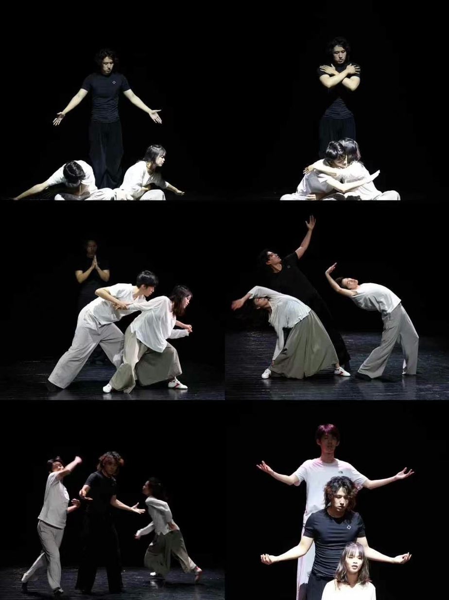
双人舞 · 牵引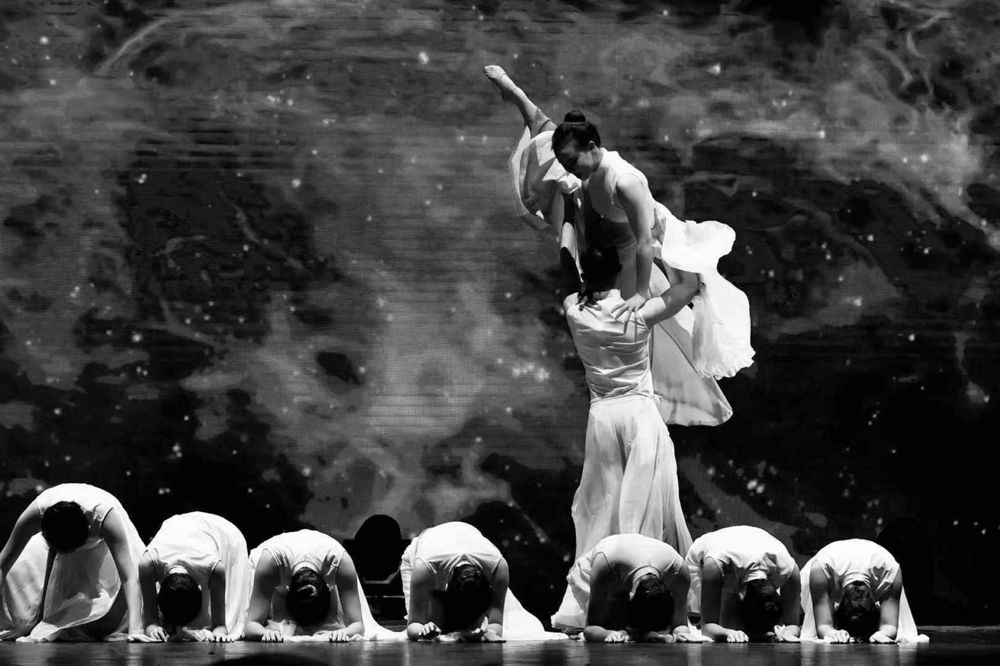
浩海逐光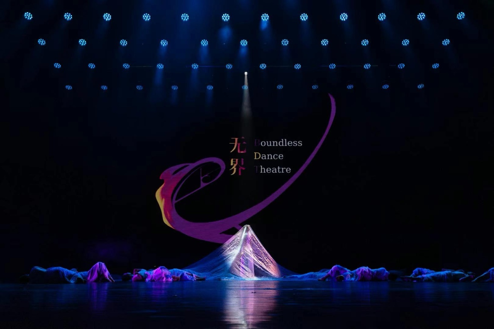
无界 · 舞台如果您对舞蹈教学、演出合作或编创项目感兴趣，欢迎联系For inquiries about dance education, performance collaborations, or choreographic projects
Beijing / New York